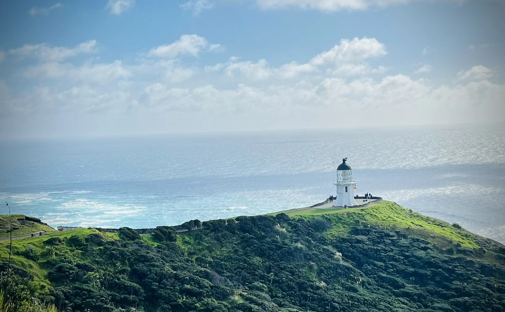
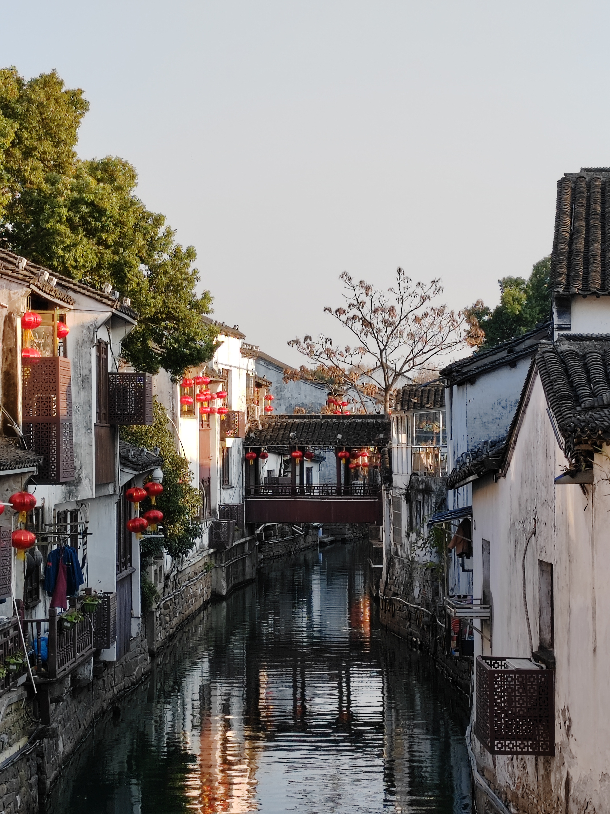
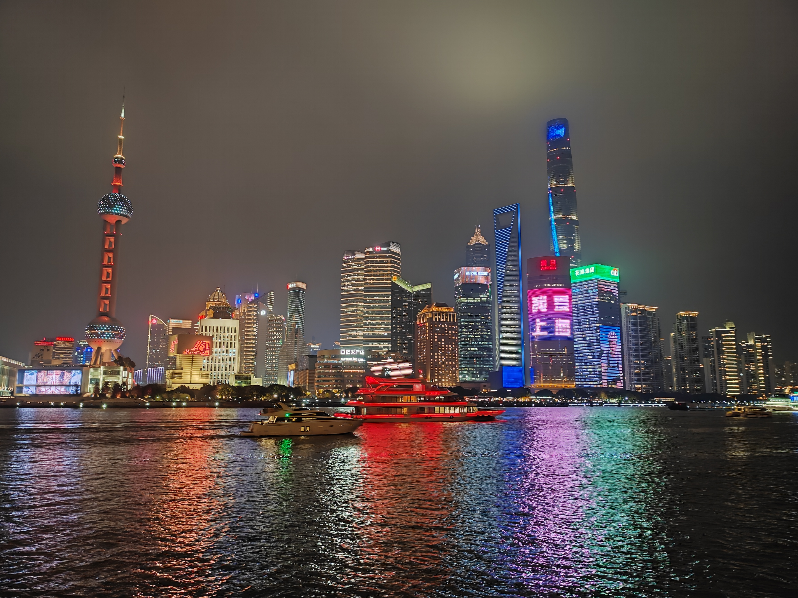

Standing on the coastline, I finally found a space to slow down my chaotic thoughts. The endless waves reminded me that life doesn't have to be rushed. This tranquil scenery taught me to embrace inner peace. I learned to stop and appreciate the view; simply gazing into the distance is enough to find inner peace.

Strolling through these ancient streets and alleys, I felt as if I had become one with the history hidden within the ancient walls. Every narrow path carried ordinary stories that I couldn't find online. Life and history intertwined, rich in everyday life and culture, bustling on one side and tranquil on the other.

In this steel jungle, what I see is not only a high-class lifestyle, but also busy office workers. It's as if I see my future.
My exploration will not stop. Every journey continues to shape how I see this colourful world.